1. Abstract
ASC (Application Security Control) is a web platform able to offer
real-time alerts about new security issues for a specific class of
software like CMS, frameworks, modules, shopping cart managers, etc.
We wish to develop a smart platform which will be able to provide an
innovative mean to find the most dangerous vulnerabilities on the web,
in order to be up to date with the latest fixes and patches. Our
secondary goal is to facilitate the process through which our users can
learn how to prevent an eventual attack, how to determine if they are
scammed and how to fix a possible vulnerability. All of the provided
functionalities are presented in a user-friendly maner through a web
interface, offering a powerful tool not only for experienced developers
but also for rookies.
The code can be accessed here.
2. Architecture
In the first section we briefly described the main goals of the
application. The architecture has two main components: a front-end part,
for the client interaction, built over Angular framework and a back-end
component implemented in NodeJs, designed following a few well known
paradigms and hosted by using various resources provided by the AWS
Cloud Platform. These two components will communicate over the HTTP
protocol, using the JSON and its extension JSON-LD as the established
data exchange format. The client will build JSON requests to send
requests toward the backend component, while the received responses will
be in the JSON-LD format. In the frontend implementation, we'll have a
module for JSON-LD to HTML+RDFa, in order to have semantic data encoded
right in our single page application.
The web services conglomerate provides a variety of functionalities,
such as getting a list containg the latest vulnerabilities, finding the
most suitable fix or patch for a certain vulnerability and real-time
notifications about new vulnerabilities found and an endpoint via SPARQL
to provide various solution to prevent and/or eradicate such security
incidents. More details about each component's particular behaviour can
be seen in the corresponding sections from below.
 ASC Architecture
ASC Architecture
2.1 Back-end Component
The Back-end Component Architecture is built over 'REST' paradigm.
REST
or REpresentational State Transfer, is an architectural manner for
providing standards between computer systems on the web, making it
easier for systems to communicate with each other. REST-compliant
systems, often called RESTful systems, are characterized by how they are
stateless and separate the concerns of client and server.
This module is composed of the following components:
-
Proxy
- Its role is to receive the requests from the users and check if
there is a cached response that can be sent back or redirect the
request to the api and cache the response when it comes back.
-
Redis
- Its role is to cache the responses for better performance in the
app.
-
API
- Its role is to secure a unique point of access to all
functionalities for the web client to call. From the API, the request
can go two ways: either to the authentication flow (if the user is not
logged in, therefore he does not have a JWT token) or to the
authorization flow (if the user has a JWT token and therefore is
already authenticated).
-
MongoDB
- Its role is to save the active users data. This will be used in the
Authentication flow to insert an active user and will be further
consulted by the Authorization flow to validate the authenticity of
the JWT token.
-
SparQL Query Runner Endpoint
- This component is in charge of transforming the received parameters
in lambdas (through requests) in various SparQL queries, depending on
which data source we need to interogate. Once the response is received
in the lambda from GraphDB, it will be sent as JSON-LD back to the
client.
To summarize, the API offers the main functionalities and by being the
core element of our architecture, it provides a unique point of access
for the web client. The API communicates with data sources represented
as ontologies for vulnerabilities. The query language for accessing the
datasources is SparQL and the communication contract established between
the client and the services provider is a mix between JSON (used for
request) and JSON-LD (sent through responses).
2.2 Front-end Component
The user interface will be created using the Angular framework combined
with Material Design, which is ideal for building single-page
applications. Angular Material is an implementation of Google's Material
Design Specification (2014-2017). The web interface will be hosted in
Netlify, in order to communicate easily with the other components of the
project. The data which is used to populate the web page in specific
context is received either in the JSON format or its extension JSON-LD.
For the latter, we'll use a parser to transform it in HTML+RDFa format,
which will be loaded into the page using custom built Angular
directives.
3. Data modeling
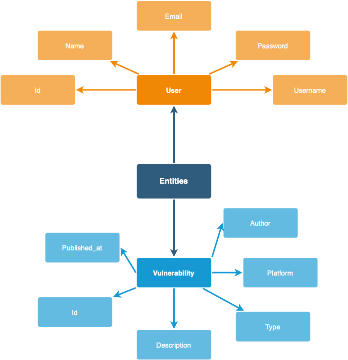
ASC Models
The main storage solution used for the above presented graph is MongoDB.
Each entity is described in the tables below.
User
| Property |
Type |
Description |
| id |
uuid |
The user id |
| name |
string |
The name of the user |
| email |
string |
The email of the user |
| password |
string |
The password of the user |
| username |
string |
The username of the user |
Vulnerability
| Property |
Type |
Description |
| id |
uuid |
The vulnerability id |
| description |
string |
The description of the vulnerability |
| type |
string |
The type of the vulnerability |
| platform |
string |
The platform of the vulnerability |
| author |
string |
The author of the vulnerability |
| published_at |
date |
The publish date of the vulnerability |
4. Usecase
In the below diagram we can see the main flows that an user can explore
while using the application. The use case routes are color coded to
emphasize the different ways in which a user can interact with our
application. Red corresponds to the authentication step and blue
corresponds to getting the vulnerabilities feed flow.
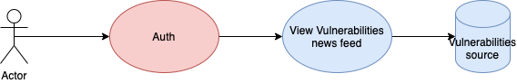
ASC Usecase
Architecture
Regarding the initial proposed architecture, there were some updates
regarding the way users authenticate into the application and the
technology used for the Pub/Sub system, the storage and exposure of the
data through the SPARQL endpoint. The updated design of architecture can
be seen in the following image:
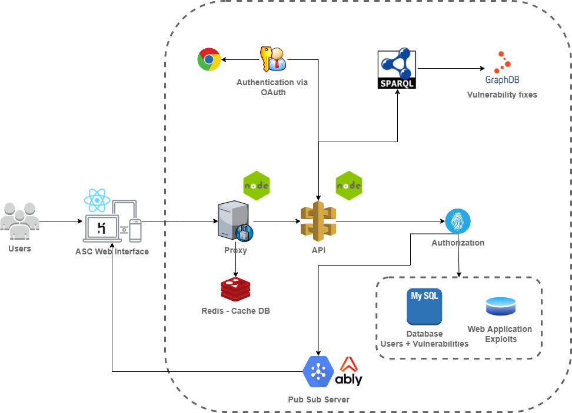
ASC Architecture
First of all, in order to access our application, the user can either
register with some simple credentials or he can login with their Google
account, using the OAuth2 support provided by the
remix-auth-google
package.
Ably
is used as the Pub/Sub system and provides feature-rich realtime
messaging. It offers real-time alerts about new security issues in the
form of browser notifications.
MongoDB was replaced with
MySQL
due to its default contraints (field dimension) and better indexing
mechanism.
We decided to replace Angular Material with
React Material to make the integration with
Remix easier and with the purpose of experimenting more with the newest trends in frontend development.
Finally, the fixes for the vulnerabilities will be stored in
GraphDB
and interogated by using
SPARQL. GraphDB is a semantic graph database that provides the core
infrastructure for solutions where modelling agility, data integration
and relationship exploration are important.
Functionality Implementation
Sign up + Sign in + Login with Google
Given the fact that our application is single-page, React Material was
used in order to implement the user interface. The web interface is
hosted on
Heroku. In the figure below, we can see the Sign In page, which will be the
first page when an user joins the application. The user has two options
for authentication in the application: login with an account created in
our application or log in with their Google account. For the
authentication with Google, the
remix-auth-google
package was used. It extends the OAuth2 support to access the Google
APIs and must have authorization credentials that identify the
application to Google's OAuth 2.0 server. In case the user does not have
an account, nor a Google account or prefers not to, there is the
possibility to register to our application by providing some basic
credentials like name, email and password (see the second picture
below). Once the user authentication is successful, a user token is
generated for the current session.
 Register View
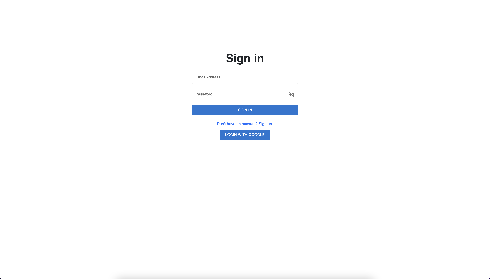
Login View
Register View
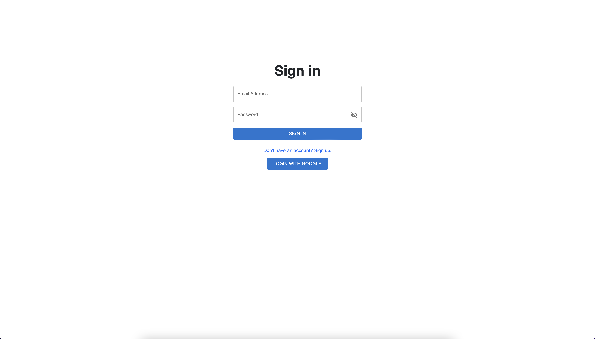
Login View
Caching
Redis was used in order to cache the requested data about the
vulnerabilities and their fixes. Everytime the Vulnerabilities or
Reports pages are refreshed, the data is received from the cache unless
new data is added in real time by our mock server. This mechanism
minimizes the waiting time for the user.
Vulnerabilities
Using Web Application Exploits public dataset regarding the exploits on
Web application vulnerabilities, several vulnerabilities were imported
into the MySQL database. That being said, in the below figure the
Vulnerabilities page can be seen. The vulnerabilities are structured in
the form of a table with the following columns: id, description, type,
platform, published, verified, port and risk. More details about these
attributes can be found in the Data modeling section.
Several filtering options are supported by our application. First of
all, there is the search input that looks for all the vulnerabilities
that contain the specified keywords. A more advanced filtering mechanism
is provided at the table level: filter by column with different
operators options (e.g. contains, equals), sorting.
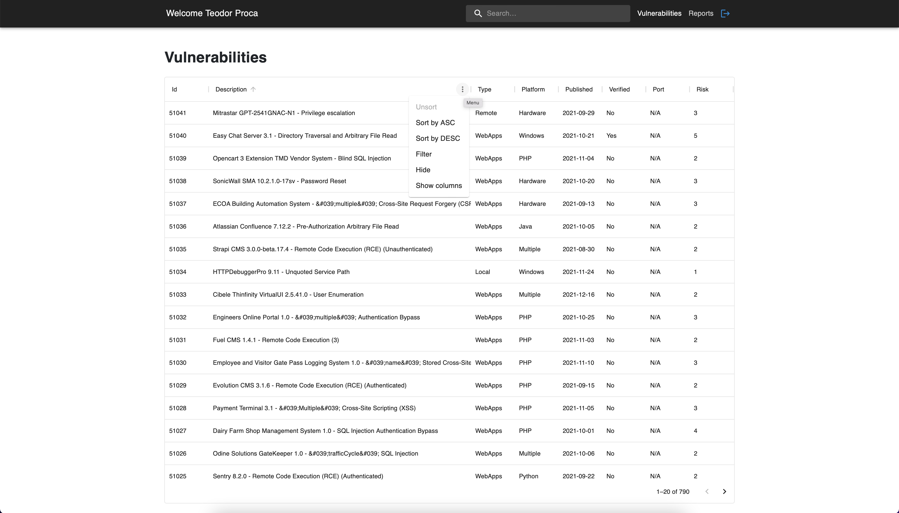
Vulnerabilites - Filtering Options
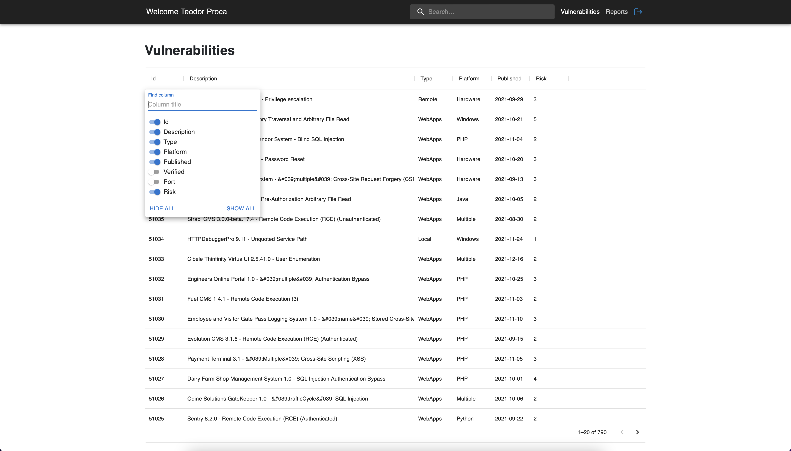
Vulnerabilites - Filtering Options
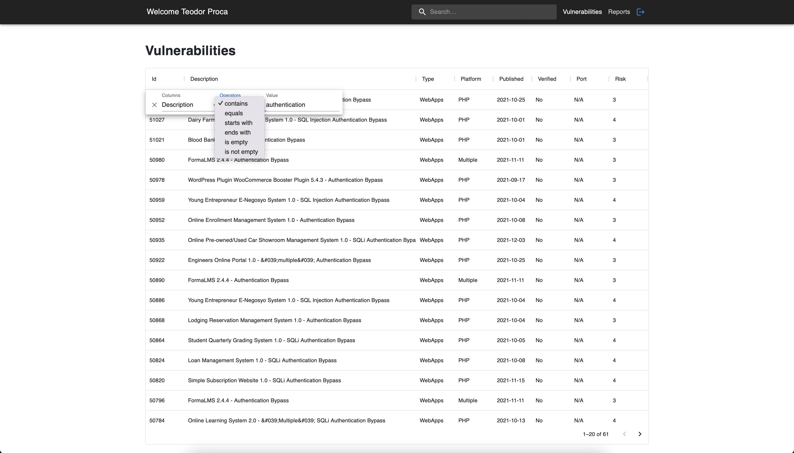
Vulnerabilites - Filtering Options
In order to build a publish/subscribe system able to offer real-time
alerts about new security issues we used
Notification API
for showing the alerts and
Ably
as the Pub/Sub messaging system. To test the realtime functionality, we
built a mock server that publishes new vulnerabilities to our database.
This is done through a job script which is responsible for creating the
publishing channel and pushing the new vulnerabilities. On the client
side, the subscription happens to the same channel, listens for the
received messages and creates the notifications.
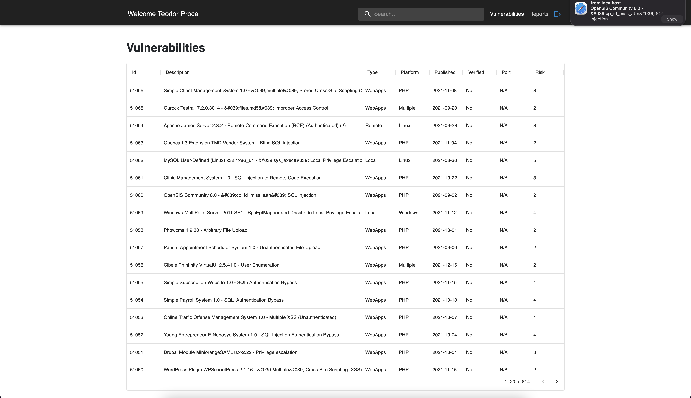
Vulnerabilites - Notifications
Moreover, by clicking on a vulnerability we can identify possible fixes
and related links about the vulnerability in cause. The returned fixes
must match either the platform of the vulnerability, either its content
contains keywords from the vulnerability's description.
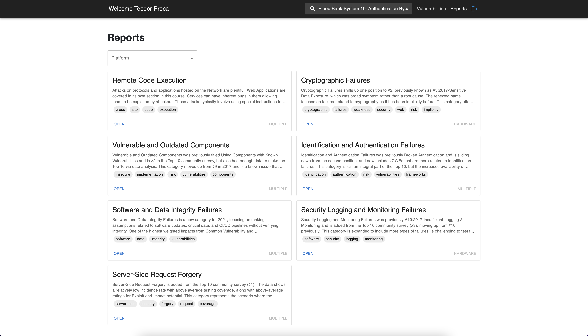
Reports related to the filtered vulnerability
Vulnerability fixes
GraphDB was used to store the RDF data for the vulnerability fixes and
it is queried from the SparQL Query Runner Endpoint. The fixes were
defined to contain the following attributes: id, body, url, genre,
section and a list of related keywords.
The query performed for retrieving the vulnerability fixes is the
following:
PREFIX report:
PREFIX rdf:
PREFIX owl:
SELECT *
WHERE {
?report rdf:type report:Report ;
report:identifier ?id;
report:articleBody ?articleBody;
report:articleSection ?articleSection ;
report:url ?url ;
report:genre ?genre ;
report:keywords ?keywords .
}
The returned data is in the Json-LD format,
application/ld+json format to be more specific. Afterwards,
the fixes information is available in multiple formats: HTM with RDFa
and Json-LD enhancement. Below you can find samples of how this was
achieved:
<Grid container spacing={2} vocab="http://schema.org/">
{filteredReports.map((report) => (
<Grid key={report.id} item md={6} xs={12}>
<script type="application/ld+json">
{`
{
"@type"": "${report["@type"]}",
"id"": ${report.id},
"articleBody": "${report.articleBody}",
"articleSection": "${report.articleSection}",
"url": "${report.url}",
"genre": "${report.genre}",
"keywords": "${report.keywords}"
}
`}
</script>
</Grid>
))}
</Grid>
For the RDFa we used the schema.org vocabulary and the properties from
the definition of a
Software Application
(e.g genre, url, keywords). Most of the provided technical reports and
defensive programming guidelines are around SQL injection and
OWASP Top 10 Security Vulnerabilities.
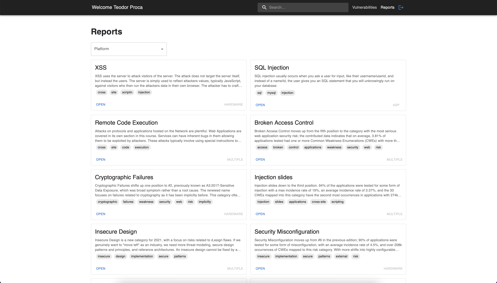
Reports
Data modeling
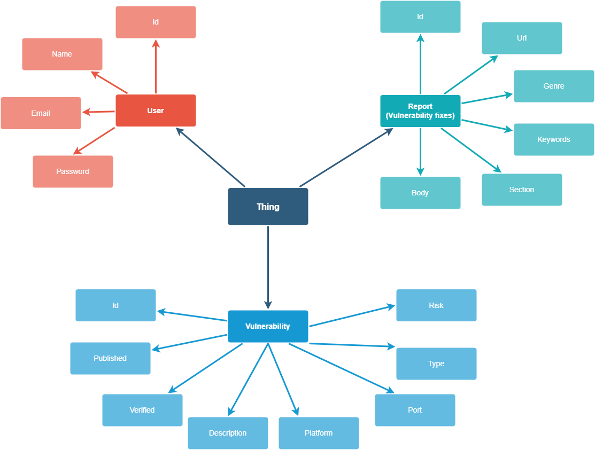
ASC Models
The main storage solution used for the above presented graph is MySQL
and GraphDB, Redis being used for the caching part. Each entity is
described in the tables below.
The knowledge base of the application can be represented by the
following three onthologies: User, Properties and Report, by using owl
classes, object properties and data properties. Each entity is described
below:
API Specification
Authentication Endpoints
There are 3 Authentication endpoints:
-
/register - exposes a POST method which is responsible with creating an user via the provided credentials: name, email and password.
-
/login - exposes a POST method which associates a sessionKey with the logged user an verifies that the password
matches the one in our database.
-
/auth/google - exposes a POST method which is responsible for the login with the Google account.
When the user exits the application, their session is cleared due to the Authenticator's destroy method and the user is redirected back to login.
Vulnerabilities endpoint
The vulnerabilities endpoint is a GET method that returns all the vulnerabilities imported from the
Exploit Database and used to populate the table from the first page.
Reports endpoint
The reports endpoint, /fixes, is a GET method that retrieves all the vulnerability related resources from GraphDB in Json-LD format. The interogation is performed using a SparQL query.
6. Conclusions
To sum up, the current solution can be a valuable application for any security orieted developer as it offers the possibility to centralize multiple vulnerabilities, advanced filtering, realtime notifications to be aware ahead of time about new security issues and suggests technical reports and defensive programming guidelines related to the vulnerabilities in cause. Application Security Control provides an intuitive user interface, allowing the user to experiment with all its functionalities.